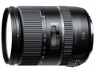

器材库 > 35mm画幅AF变焦镜头 > 28-300/3.5-6.3 Di VC PZD (A010)

详细规格
镜头类型
广角变焦镜头
发布日期
2014-02-06
焦距
28mm-300mm
最大光圈
f/3.5-6.3
最小光圈
f/22-40
视角（对角）
75°23‘~8°15’（全画幅）/ 52°58‘~5°20’（APS-C画幅）
镜头结构
19片/15组
非球面镜片
4片
低/超低色散镜片
4片
光圈叶片
7片
最近对焦距离
49cm
最大放大倍率
0.29
驱动马达
PZD（超声波自动对焦马达）
滤镜口径
67mm
镜头卡口
Canon EF, Minolta/Konica-Minolta/Sony AF, Nikon AF
防抖
是
颜色
黑色
尺寸
74.4×96mm
重量
540g
附件
花瓣形遮光罩
北京的太阳2016-08-30 17:174.67 分
操作性 4.50耐用性 4.50性价比 5.00解像力 4.50色彩还原 4.50机械结构 5.00
shengxcx2016-08-26 19:074.42 分
操作性 5.00耐用性 4.50性价比 5.00解像力 4.00色彩还原 4.50机械结构 3.50
zyx7526242015-08-04 18:044.75 分
操作性 5.00耐用性 4.50性价比 5.00解像力 4.50色彩还原 5.00机械结构 4.50
产品图 / 样片
腾龙 28-300/3.5-6.3 Di VC PZD (A010)
评测 / 相关文章
- 全幅之便利天涯镜 腾龙新28-300测评 （存档）
- ［试用］腾龙28-300 VC PZD实拍样张 （存档）
- ［行情］腾龙全副大变焦28-300发售中 （存档）
- ［资讯］全画幅适用 腾龙发布28-300mm全能镜头 （存档）